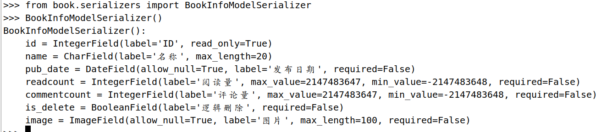
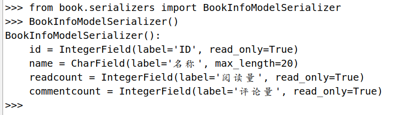
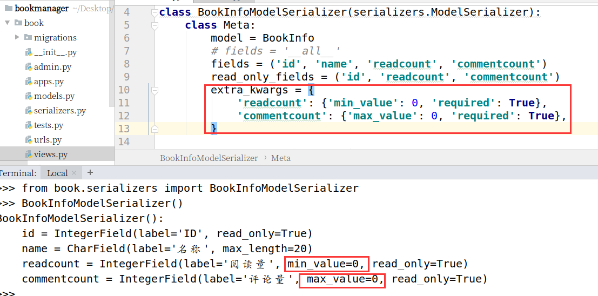

模型类序列化器ModelSerializer
如果我们想要使用序列化器对应的是Django的模型类，DRF为我们提供了ModelSerializer模型类序列化器来帮助我们快速创建一个Serializer类。
ModelSerializer与常规的Serializer相同，但提供了：
基于模型类自动生成一系列字段
包含默认的create()和update()的实现
1. 定义
比如我们创建一个BookInfoModelSerializer
from rest_framework import serializers
from book.models import BookInfo
class BookInfoModelSerializer(serializers.ModelSerializer):
class Meta:
model = BookInfo
fields = '__all__'
- model 指明参照哪个模型类
- fields 指明为模型类的哪些字段生成
我们可以在python manage.py shell中查看自动生成的BookInfoModelSerializer的具体实现
>>> from book.serializers import BookInfoModelSerializer
>>> BookInfoModelSerializer()
BookInfoModelSerializer():
id = IntegerField(label='ID', read_only=True)
name = CharField(label='名称', max_length=20)
pub_date = DateField(allow_null=True, label='发布日期', required=False)
readcount = IntegerField(label='阅读量', max_value=2147483647, min_value=-2147483648, required=False)
commentcount = IntegerField(label='评论量', max_value=2147483647, min_value=-2147483648, required=False)
is_delete = BooleanField(label='逻辑删除', required=False)
image = ImageField(allow_null=True, label='图片', max_length=100, required=False)

2. 指定字段
1) 使用fields来明确字段，__all__表名包含所有字段，也可以写明具体哪些字段，如
class BookInfoModelSerializer(serializers.ModelSerializer):
class Meta:
model = BookInfo
fields = '__all__'
2) 使用exclude可以明确排除掉哪些字段
class BookInfoModelSerializer(serializers.ModelSerializer):
class Meta:
model = BookInfo
exclude = ('image',)
3) 显示指明字段，如：
class BookInfoModelSerializer(serializers.ModelSerializer):
class Meta:
model = BookInfo
fields = ('id','name', 'readcount', 'commentcount')
4) 指明只读字段
可以通过read_only_fields指明只读字段，即仅用于序列化输出的字段
class BookInfoModelSerializer(serializers.ModelSerializer):
class Meta:
model = BookInfo
fields = ('id','name', 'readcount', 'commentcount')
read_only_fields = ('id', 'readcount', 'commentcount')

3. 添加额外参数
我们可以使用extra_kwargs参数为ModelSerializer添加或修改原有的选项参数
class BookInfoModelSerializer(serializers.ModelSerializer):
class Meta:
model = BookInfo
fields = ('id','name', 'readcount', 'commentcount')
read_only_fields = ('id', 'readcount', 'commentcount')
extra_kwargs = {
'readcount': {'min_value': 0, 'required': True},
'commentcount': {'max_value': 0, 'required': True},
}
>>> from book.serializers import BookInfoModelSerializer
>>> BookInfoModelSerializer()
BookInfoModelSerializer():
id = IntegerField(label='ID', read_only=True)
name = CharField(label='名称', max_length=20)
readcount = IntegerField(label='阅读量', min_value=0, read_only=True)
commentcount = IntegerField(label='评论量', max_value=0, read_only=True)
